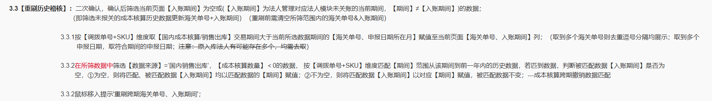
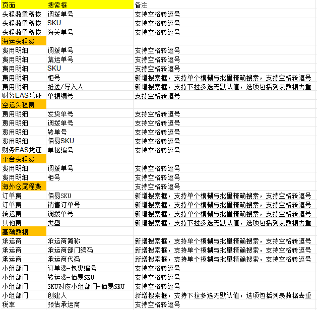
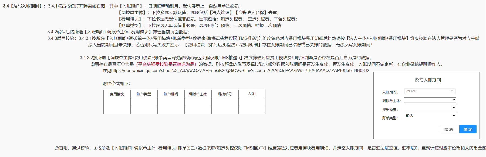
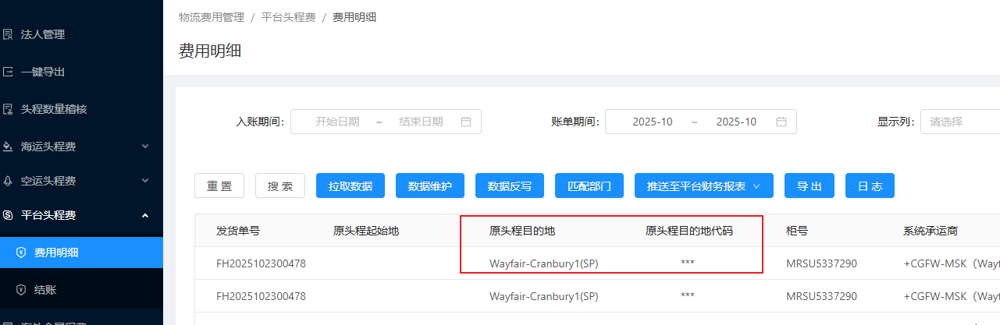
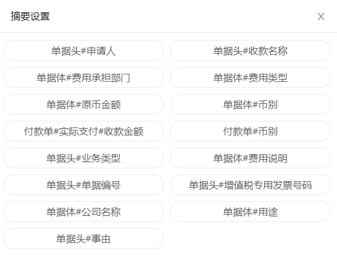

1、【头程数量稽核】页面：红框为本次迭代调整

特殊处理：所筛成本核算数据中，若【申报日期所在月】早于【交易日期】，则【取交易日期】作为【入账期间】，【海关单号】取值逻辑不变
改成 取最晚期间的申报日期
2、【财务物流费用】各页面搜索框调整如下： 补充：空运头程/费用明细 新增【入账期间】搜索框，格式参考海运头程费用明细；海运头程/费用明细 新增【预估承运商】搜索框；

3、【平台头程费/费用明细】页面：3.1数据维护弹窗店铺页签导入限制：导入店铺时校验必录，按【店铺】校验导入店铺是否在【平台财务报表/账号管理/其他平台】对应wayfair或walmart平台【状态】=‘正常使用’的【店铺】中存在；不存在则失败；
3.2匹配部门按钮：点击按钮二次确认，确认后校验所选入账期间数据是否存在【是否推送】为‘是’的数据 或 对应数据法人主体+费用模块+入账期间非当前期间 或 为已关账数据，存在则匹配失败；
不存在则根据【入账期间+店铺+站点】在【平台财务报表/账号管理/其他平台】获取wayfair或walmart平台对应数据的部门字段值至【部门】字段（仅更新【是否推送】不为是的数据）；
4、BUG：没有海外仓查看权限应屏蔽名称而非代码；


5、【平台财务报表/亚马逊/销售数据】：【计算汇总】：
原逻辑：在执行【计算汇总】时，筛选了“财务类型”!= 转账的月度交易明细，按【期间+店铺+站点+部门+来源类型】汇总；=转账的有多少条取多少条；
现逻辑；由于存在财务类型=调整（即≠转账），但转款原币有值的数据，为了不将要取倒数第二天汇率的数据取到转款汇率，
所以要改为：在执行【计算汇总】时，筛选月度交易明细，转款原币为0的数据，按【期间+店铺+站点+部门+来源类型】汇总；筛选月度交易明细，转款原币不为0的数据，不按维度汇总(有多少条取多少条)；
其余逻辑不变；
6、【平台财务报表/wayfair】：
6.1【CG发票数据】：6.1.1列表新增【二程转运费（原币、本位币）】分别位于【CG运费（原币、本位币）】右侧；--导出同步调整
6.1.2【更货柜号匹配】按钮：新增【类型】=‘Domestic Forward Positioning’且【调整说明】=‘Domestic Induction’不参与匹配；
6.2【解析逻辑配置/销售数据/wayfair】：【适用范围】=‘CG发票数据’：
【目标字段（原币）】下拉选项及默认行新增【二程转运费】；【算法】编辑框原币值新增【二程转运费】，位于CG运费下方；
7、【财务物流费用】各头程&海外仓尾程费的【费用明细】&【财务EAS凭证 】页面，汇率改为前端后台均保留8位小数，导出同步调整；--原因：存在越南盾兑美元的汇率，8位小数；
8、【财务对接平台/凭证模板】：海外仓尾程费：列表【辅助账数据来源】：新增核算科目公司
9、【财务物流费用/海外仓尾程】：【刷新基础数据】速度优化；
10、【头程数量稽核】页面：【反写入账期间】：原逻辑执行完毕后，若所选【账单类型】含’二次预估‘或’财报二次预估‘时，需新增下述处理逻辑：(反写二次预估、财报二次预估海运头程数据的入账期间)
筛选所选对应【费用明细】中【入账期间】为空且【账单类型】=‘二次预估’‘财报二次预估’的数据，按【调拨单主体编码+调拨单号+SKU】维度匹配【头程数量稽核】页面所选【调拨单主体编码+费用模块+账单类型(二次预估，财报二次预估)】，【期间】为一年内(含所选入账期间)的对应数据并判断所匹【入账期间】是否有值。
若有值，则将匹到的费用明细数据【入账期间】更新为所选的反写入账期间；
11、【财务对接平台/凭证模板】：【来源单据】=‘费用报销单、预付申请单、借款申请单’，分录【摘要】编辑框新增选项 单据体#项目 ---取费用报销单据详情中报销信息的【项目】字段值；
其余是否汇总不为是的数据按下述逻辑反写
序号
核算科目
取单据上的字段
核算项目编码来源
单据字段来源
1
公司
财务物流费用/海外仓尾程费/财务EAS凭证 法人主体编码
财务物流费用/海外仓尾程费/财务EAS凭证 法人主体

单据体#项目